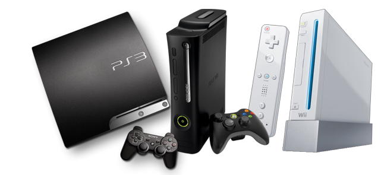

| Una videoconsola es un dispositivo electrónico preparado para ejecutar juegos, aunque en las últimas generaciones a una clara tendencia a convertirse en centros multimedia, donde escuchar música, ver películas, Internet, etc., pudiéndose diferenciar en dos grandes familias, las sobremesa, que requieren de televisor y alimentación eléctrica, y las portátiles, que tienen pantalla propia y utilizan baterías o pilas | listas de videoconsolas | Una videoconsola o consola de videojuegos es un sistema electrónico de entretenimiento para el hogar que ejecuta juegos electrónicos (videojuegos) contenidos en cartuchos, discos ópticos, discos magnéticos, tarjetas de memoria o cualquier dispositivo de almacenamiento. |  |
| | Con WiiU, la octava generación de videoconsolas de sobremesa daba el pistoletazo de salida. Tras ella, Sony medio presentó PlayStation 4 y todo apunta a que Microsoft enseñará su nueva consola antes del E3, donde esperamos ver novedades jugosas en todos los frentes. |
marcas de videoconsolas
-
nintendo
-
playstation - sony
-
xbox - microsoft
|